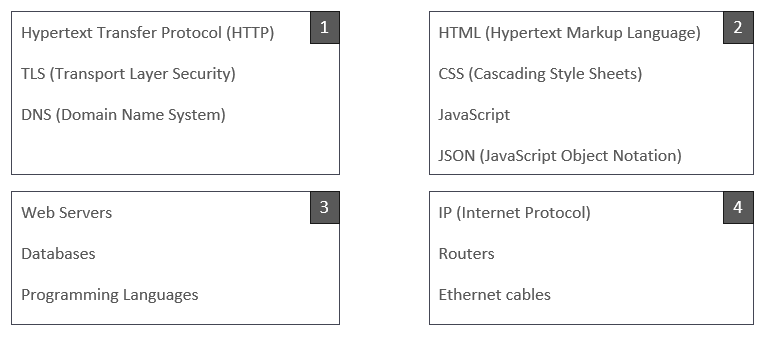

We learned about the Client / Server architecture, a computing model where clients request services or resources from a server. The server provides these services by processing and responding to the requests. This architecture is widely used in computer networks and distributed systems.
The mentioned architecture relies on a complex infrastructure to enable communication between the clients and the servers. These servers provide resources and data and facilitate a structured organization of computing resources in a networked environment.
We were presented with a variety of keywords, which we had to research after being split into four, small groups. Our group researched the words from box 3. Below are the notes we took from our research.
1. Web Servers: Web servers play a crucial role in the client/server architecture by hosting and serving web content, such as HTML, CSS, and JavaScript files, to clients upon request. They handle client requests, process them, and send back the appropriate responses.
2. Databases: Databases are often used to store and manage the content of websites or online applications. In a client/server setup, the server, which could be a web server, interacts with databases to retrieve and store data. They store information like user profiles, articles, or any other dynamic content.
3. Programming Languages: Programming languages are essential for developing the logic and functionality of both the client and server sides. On the server side, languages like Python, Node.js, or Ruby are commonly used to handle client requests, interact with databases, and generate dynamic content. On the client side, languages such as JavaScript, together with HTML and CSS, are used to create interactive and responsive user interfaces within a web browser.
In summary, web servers manage the communication between clients and databases, while programming languages are used to implement the logic and functionality on both the client and server sides, facilitating the creation and delivery of dynamic online media content.
With our gained knowledge, we had to get back to our previously chosen social media platform and were tasked with the following:
- Categorize the captured requests into different types (e.g., GET, POST) and identify their purposes (e.g., loading the feed, sending messages, fetching user profiles).
- Identify the endpoints (URLs) to which these requests are sent. Explore the structure of these URLs
Tiktok’s API uses HTTP methods like GET, POST, PUT and DELETE to perform numerous commands and actions, so below is a sum-up:
GET: This method is used to retrieve data. In this scenario, TikTok needs to fetch information when trying to access user profiles, their videos and comments. One of the main features is the so called ‘’For You Page’’, where the GET method is used to fetch trending content and all of the content that belongs to it, to put it in an infinite list of videos playing one after another. Of course, for each video, new data needs to be fetched.
POST:This method is used to create new data, so data that has not been existing in the system yet and can not be fetched. This includes uploading and posting new videos, comments or interactions with other people (sharing, liking, following).
PUT:Put is a similar method than post, or at least some of the features can be switched up for the two. The PUT is typically used when a user is updating already existing data. In this sense, it means updating your user profile, editing your own video captions or comments or just simply modify your app settings in general.
DELETE:This method is very obviously, like the name suggests, for removing data. This is very simply just deleting comments, videos, captions or other data that you can also edit or create on the app. Interestingly enough, unfollowing users also counts towards the DELETE function.
TikTok, like most other Social Media applications, is heavily based on following the users requests. This means the user gives an input on what they want the app to do and the app will handle the data accordingly. Main inputs given are interacting with other people’s content or fetching other people’s profiles. Regarding endpoints, with the user’s input, the application is mainly based on user profile interactions (likes, comments, shares..) and video interactions (retrieving, uploading, finding, managing videos).